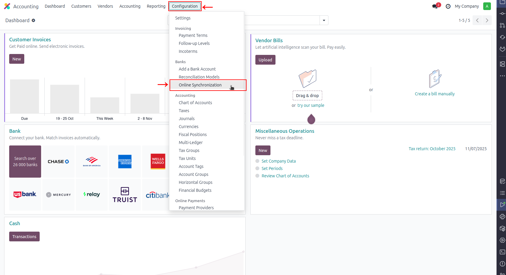
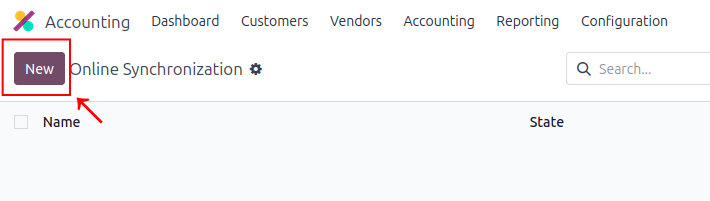
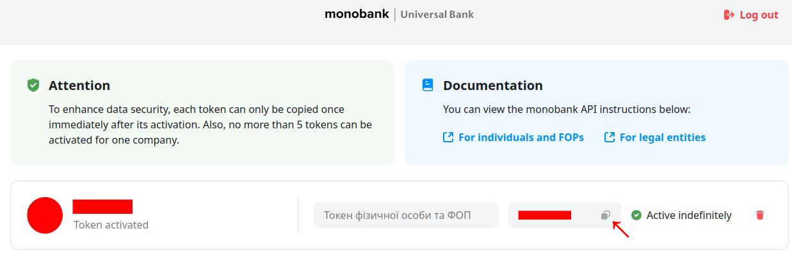
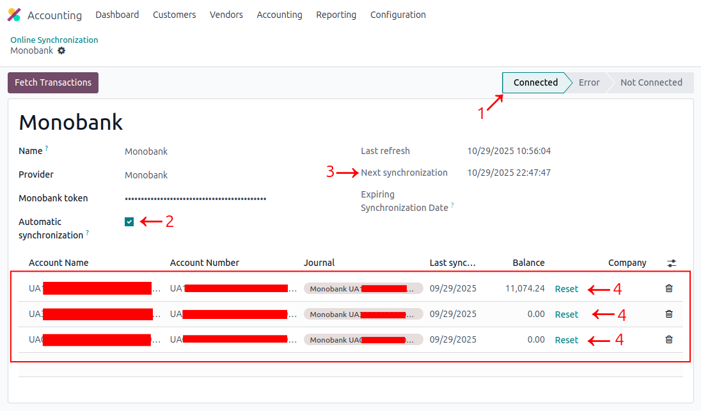
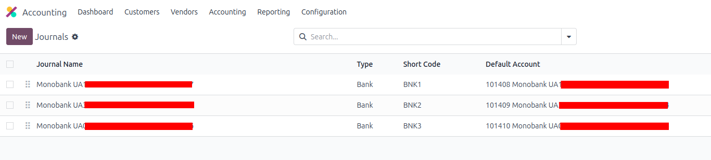
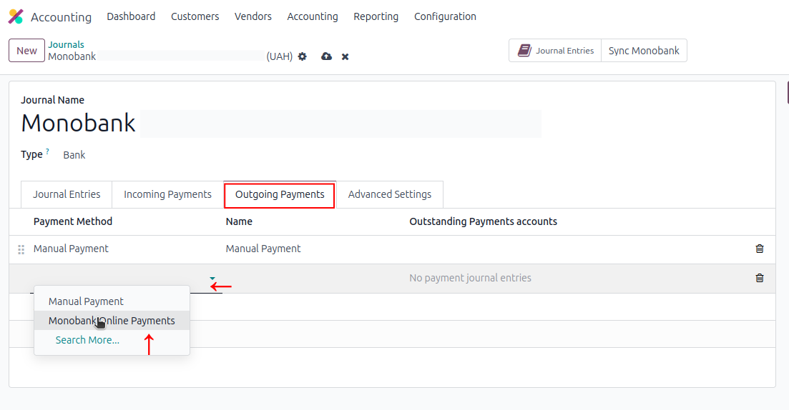
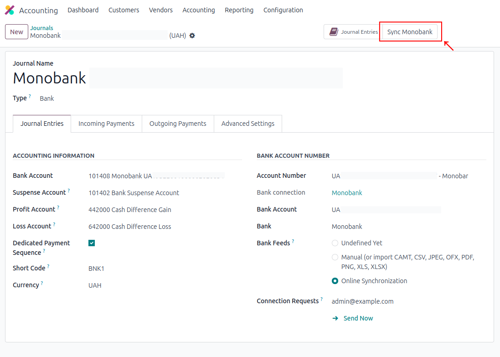
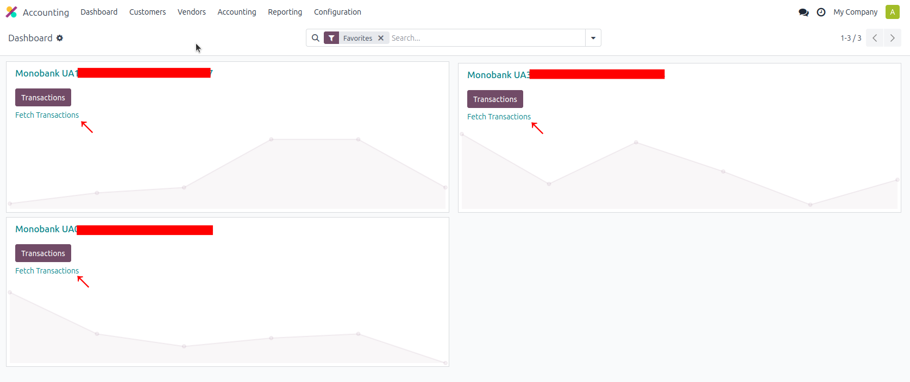

Configuration
Getting Started
To start pulling online bank statements, configure the following in Odoo:
- Create a new Connection in Accounting → Online Synchronization
- Press New to proceed to creation form
- Enter connection Name, e.g. "Monobank" 1
- Select "Monobank" as a Provider from selection 2
- Insert Your Monobank Token 3
- Save changes & click "Connect to Monobank" 4 & 5
- You can get your Monobank Personal Access Token from your Monobank personal account
- After successful connection, connection state will change to "Connected" 1
- By placing a check in Automatic synchronization Checkbox You can enable or disable Scheduled synchronization. Scheduled synchronization proceeds every 12 hours 2
- Next synchronization field contains a date of next Scheduled synchronization 3
- Under the above-mentioned fields You can see Your fetched Bank Accounts. Reset button here should be pressed if Account fetching status hung up on "Waiting" status 4
- Journal for each Bank Account will be created Automatically.
- In every Monobank Journal You can add Outgoing Payment Method "Monobank Online Payments"
- You can Pull Banks statements for a custom date range from Monobank Journal by pressing "Sync Monobank" button:
- In the wizard that opens choose a Date from 1
- Choose a Date to 2
- And press "Sync" 3
- Right after You will be redirected to Pulled Bank Statements
- You can pull statements from Dashboard. Statements will be pulled since Last Sync date (You can inspect it in Connection form) To today's Date.
- Also You can pull statements from Connection form by pressing "Fetch Transactions". Statements will be pulled since Last Sync date (You can inspect it in Connection form) To today's Date.








